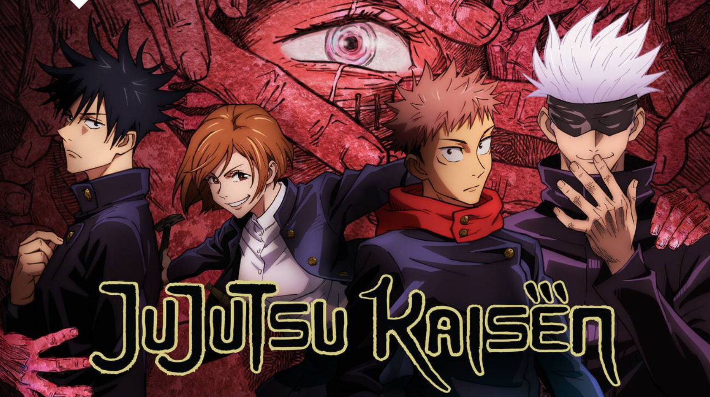

About the Website!
Showcases popular characters, known as sorcerers, from the show Jujustu Kaisen.
Choices and Inspirations
I am an anime fan who particularly enjoys Jujutsu Kaisen. Jujutsu kaisen has a lot of dark colors like black, red and purple; this is what led to the dark grey boxes and purple buttons. I went for a simple but more modern looks with bubbly/rounded boxes.
